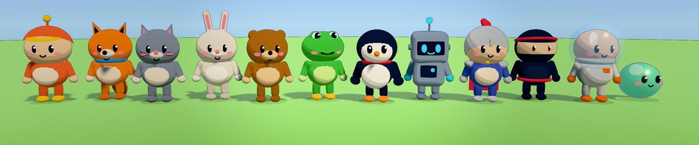
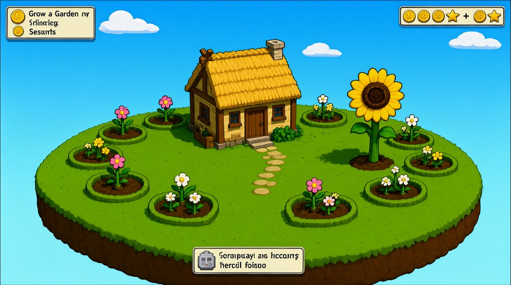
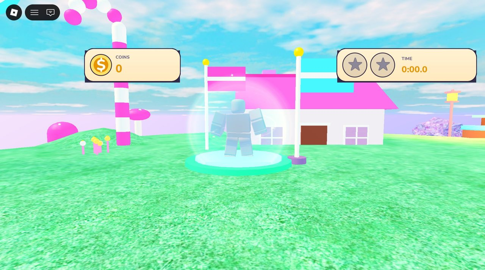

It makes the game itself
Higgsfield sells AI covers and trailers for games you already built. Blocksfield makes the game: a page you can play from a link, or a real Roblox place you can open, play and publish.
One paragraph in, a playable 3D game out. Open-weight models plan it, code it, make its art, music and sound in ComfyUI, play it, look at it and fix it, all on one rented RTX 5090.
The games
Every game here came from the pitch on its card. Click Play: it runs in your browser, no install. "How it was made" shows the plan, the concept art, every generated asset and the whole build log.
Plays on desktop (keyboard or gamepad) and on phones (touch, landscape).
Beyond the kits
Most of a game is the model composing tested kit parts. These go further: it lays out a level piece by piece, or writes a mechanic the kits don't have.
Generalization
The planner picks each game's level, look, controller and character from the kit's own option lists; the builder then customises everything on top. Filled in: what the games on this page picked.

How it works
A local 27B model is the designer, programmer and playtester. ComfyUI, self-hosted and driven over its HTTP API, is the art department. Each web game's making-of page records any operator intervention.
you
One paragraph describing the game you want.
Qwen3.8-27B
Designs the game as schema-checked JSON whose options are the kits' own: look, level, player, rules, assets.
Qwen-Image-2.1 · ComfyUI
Concept art of the finished game. It is the target every build is judged against.
ComfyUI · one burst
Sky, UI icons, music (ACE-Step 1.5), sound effects (Stable Audio 3), props (Qwen-Image → Idol splat → voxels).
Qwen3.8-27B · ThreeKit
A builder agent composes our kit library into the game's code and plays it in real Chrome as it works.
autopilot bot · vision
A bot plays the game. The model looks at the screenshots and scores them against the concept board.
Qwen3.8-27B
Fixes what the judge found. The best-scoring version is the one that ships, so a repair can never lower the score.
three.js · static page
Plays from a link, with its thumbnail, gameplay video and a making-of record.
Play, judge, repair: round after round until it reads right.
One GPU, taking turns
A small arbiter time-slices the card. The 27B LLM sleeps to host RAM (vLLM sleep mode, about 4 seconds) while ComfyUI runs a burst of art jobs, then wakes up and carries on. A burst of requests shares one swap.
Why it's new
Higgsfield sells AI covers and trailers for games you already built. Blocksfield makes the game: a page you can play from a link, or a real Roblox place you can open, play and publish.
Blind code generation stops at "it runs". Here a bot plays every build, a vision judge scores the screenshots against the concept art, and the model repairs what it sees, keeping the best version.
A local model can't write a great character controller or HUD from scratch, but it composes well-made parts reliably. So it builds from tested kits, and the game is its choices: design, layout, art direction, tuning.
Concept board, skies, icons, music, sound effects and props, with a custom node that lifts an image to a Gaussian splat and then to voxel props. It shares the same GPU as the LLM, taking turns.
Open weights only
No partner nodes, no closed APIs. All of them run on one rented RTX 5090, so a game costs no per-call API fees, only GPU time.
| Job | Model | Runs in |
|---|---|---|
| Game design, code, playtest judge | Qwen3.8-27BRedHatAI/Qwen3.8-27B-NVFP4 | vLLM (sleep mode) |
| Concept board, sky, icons, UI art | Qwen-Image-2.1+ BiRefNet cut-outs | ComfyUI |
| Props | Idolsperidlabs/idol · image → Gaussian splat → voxels | ComfyUI (our custom node) |
| Music | ACE-Step 1.5 | ComfyUI |
| Sound effects | Stable Audio 3small-sfx | ComfyUI |
| 3D meshes (Roblox) | TRELLIS.2decimated under Roblox's triangle limit | ComfyUI |
| Trailer clips (Roblox) | LTX-2.5image-to-video | ComfyUI |
Licences differ: Qwen-Image-2.1 is research-only (non-commercial); LTX-2.5 and Stable Audio 3 use community licences; Qwen3.8, TRELLIS.2, ACE-Step and BiRefNet are permissive. Check each one before commercial use.
Also on Roblox
The same idea, built inside Roblox Studio from one paragraph. Roblox has 100M+ daily players; a hosted demo does not.


Open it in Roblox Studio and press Play. Where a build's own code crashed on a one-line bug, we fixed that line by hand and logged it in the run's OPERATOR_NOTES.md.
Open source, MIT
One GPU box with a 32 GB card and these three repositories.
The pipeline: web and Roblox runners, the GPU arbiter, the ComfyUI workflows, the Idol node, ThreeKit and this site.
github.com → Hcoder10/cybus-harnessPlan, style guide, build, capture, vision judge, repair: the agent loop behind the Roblox builds. Branch blocksfield.
The Roblox Studio plugin and server the harness drives Studio through: build in edit mode, play, capture.
github.com →